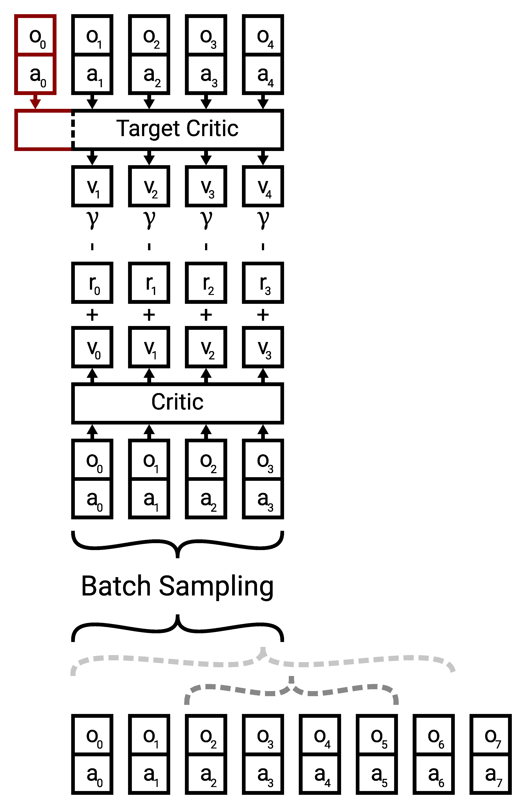
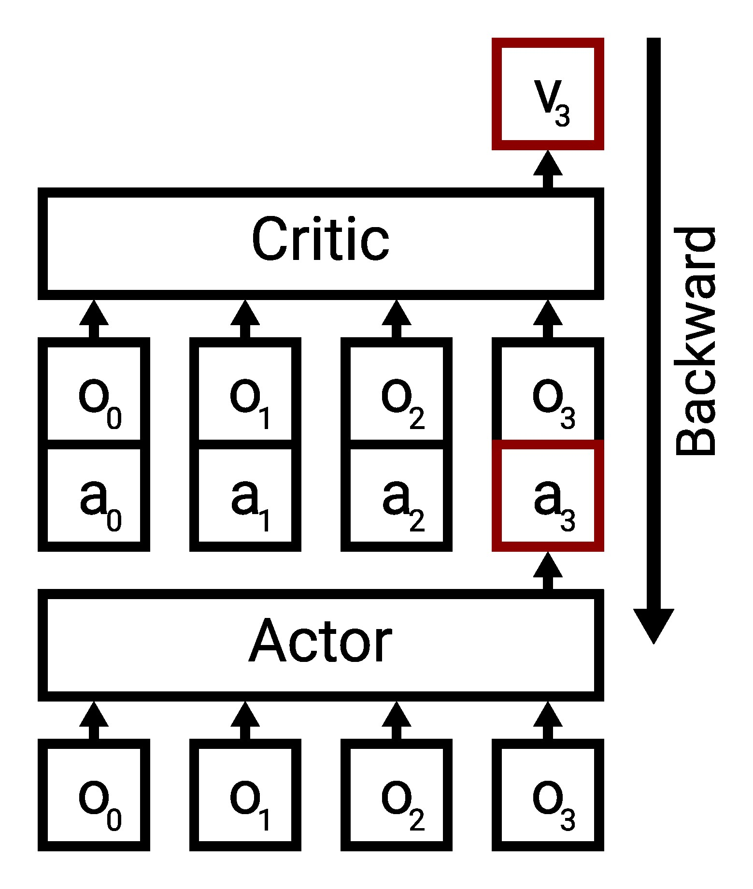

Memory¶
In many real-world scenarios we do not have access to the ground truth state of the environment. In these cases we only get observations that have some mutual information with the true state. In this case the Markov property is violated because we are dealing with a POMDP and hence information from past observations influences the estimate of the current state. Because the belief about the current state is dependent on previous observations, also the future behavior and action selection decision are dependent on them.
To respect this in our policy, it needs to be able to reason about sequences of observations. A natural way to implement this is using recurrent neural networs (RNNs) that carry an internal state that can transport information through time. Starting from RLtools v2.1 this sequential nature is supported for off-policy algorithms (SAC and TD3, supported by the OffPolicyRunner). PPO does not support sequences, yet.
Working with sequences introduces quite some complexity and requires a lot of nuance to get right:
“DRL algorithms are generally prone to bugs that are difficult to trace. At a glance, integrating a recurrent layer into a model seems simple. However, the intricacies of doing so go beyond mere architectural adjustments. The entire training algorithm setup becomes more nuanced and complex. In our journey to establish the GRU baseline, numerous bugs arose, stalling our progress for extensive periods.”
– Marco Pleines, “Memory-based deep reinforcement learning in endless imperfect information games” (2023)
In the loop interface we abstract most of these complexities away and just expose a minimal set of parameters that need to be set to correctly reflect the problem (in the BATCH_SAMPLING_PARAMETERS struct).
First, as usual, we set up the environment:
[1]:
#define RL_TOOLS_BACKEND_ENABLE_OPENBLAS
#include <rl_tools/operations/cpu_mux.h>
#include <rl_tools/nn/optimizers/adam/instance/operations_generic.h>
#include <rl_tools/nn/operations_cpu.h>
#include <rl_tools/nn/layers/gru/operations_generic.h>
#include <rl_tools/nn/layers/sample_and_squash/operations_generic.h>
#include <rl_tools/rl/environments/memory/operations_cpu.h>
#include <rl_tools/rl/environments/pendulum/operations_cpu.h>
#include <rl_tools/nn_models/mlp/operations_generic.h>
#include <rl_tools/nn_models/random_uniform/operations_generic.h>
#include <rl_tools/nn_models/sequential/operations_generic.h>
#include <rl_tools/nn/optimizers/adam/operations_generic.h>
#include <rl_tools/rl/algorithms/sac/loop/core/config.h>
#include <rl_tools/rl/loop/steps/evaluation/config.h>
#include <rl_tools/rl/algorithms/sac/loop/core/operations_generic.h>
namespace rlt = rl_tools;
using DEVICE = rlt::devices::DEVICE_FACTORY<>;
using RNG = DEVICE::SPEC::RANDOM::ENGINE<>;
using T = float;
using TYPE_POLICY = rlt::numeric_types::Policy<T>;
using TI = typename DEVICE::index_t;
[2]:
#pragma cling load("openblas")
We are tackling sequences of length 50 which is ~SOTA for memory-based RL. The batch size can be quite small because the gradient is also accumulated along the sequence, leading to an effective batch size of SEQUENCE_LENGTH*BATCH_SIZE:
[3]:
constexpr TI SEQUENCE_LENGTH = 50;
constexpr TI SEQUENCE_LENGTH_PROXY = SEQUENCE_LENGTH;
constexpr TI BATCH_SIZE = 4;
Here, we just want to test if the policy can learn to memorize previous inputs. We are not interested in exploration or planning (future rewards are irrelevant at the current step). For this we have a simple memory environment which provides 0/1 observations and requires the agent to output the count of ones in the last HORIZON steps. Compared to just counting the number of ones along the whole sequence length, this is much more challenging because the policy needs to remember the
positions of all ones and zeros in the horizon because when they go out of the context/horizon they should not count towards the output:
[4]:
struct ENVIRONMENT_PARAMETERS{
static constexpr TI HORIZON = 10;
static constexpr T INPUT_PROBABILITY = HORIZON <= 4 ? 0.5 : (T)2/HORIZON; // probability of emitting a "1"
static constexpr TI EPISODE_STEP_LIMIT = 2000;
static constexpr rlt::rl::environments::memory::Mode MODE = rlt::rl::environments::memory::Mode::COUNT_INPUT;
};
using ENVIRONMENT_SPEC = rlt::rl::environments::memory::Specification<T, TI, ENVIRONMENT_PARAMETERS>;
using ENVIRONMENT = rlt::rl::environments::Memory<ENVIRONMENT_SPEC>;
Now that we understand the environment, we can set up the batch sampling parameters mentioned earlier:
[5]:
struct MY_BATCH_SAMPLING_PARAMETERS{
static constexpr bool INCLUDE_FIRST_STEP_IN_TARGETS = true;
static constexpr bool ALWAYS_SAMPLE_FROM_INITIAL_STATE = false;
static constexpr bool RANDOM_SEQ_LENGTH = true;
static constexpr bool ENABLE_NOMINAL_SEQUENCE_LENGTH_PROBABILITY = true;
static constexpr T NOMINAL_SEQUENCE_LENGTH_PROBABILITY = 0.5;
};
Off-policy RL algorithms like SAC and TD3 use a target critic to bootstrap next-state values. These estimated next-state values are used in combination with the Bellman equation to improve the critic/value function. In the Markovian case, where each value estimate only depends on the current state this is relatively straightforward but in the partially observable case it becomes more nuanced as can be seen in the following illustration:

When sampling sequences from the replay buffer we need to consider the properties of the environment. For example some environments only reveal some information on the first step, which the agent is supposed to memorize and use to make control decisions later in the episode. In these cases it does not make sense to sample partial episodes because the initial information is missing and the control problem might be ill-posed without it. To control this behavior we expose the
ALWAYS_SAMPLE_FROM_INITIAL_STATE flag. Moreover the sequence lengths the policy (and critic) is exposed to during training matters. Sequence length extrapolation (aka using the policy on longer sequences during inference than during training) works in many cases it is still out of distribution. Hence we provide a flag RANDOM_SEQ_LENGTH to sample random sequence length (uniform distribution in sequence length). When sampling random sequence length uniformly it might be very rare to sample
nominal/full length sequence. While training on random smaller sequence lengths can speed up training in some tasks we would like to perform inference/deployment at the fixed/nominal sequence length (or even extrapolate this) hence we enable a mixture distribution that switches between the uniform sequence length sampling and full sequence sampling by activating the ENABLE_NOMINAL_SEQUENCE_LENGTH_PROBABILITY flag and providing a mixture probability in NOMINAL_SEQUENCE_LENGTH_PROBABILITY.
In cases where information is only revealed on the first step, we run into a very nuanced issue where if we use the same sequence length for the critic and target critic, we miss the initial step in the target critic (as illustrated with the red part above). Hence, inferring the target values might be ill-posed. To account for this, we provide the INCLUDE_FIRST_STEP_IN_TARGETS flag.
Furthermore there is also one nuance with the training of the actor. In most environments (except some theoretical/pathological examples), the actions impact the state. Hence, when considering trajectories, we can not modify intermediate actions as this invalidates the following states. This leads to the issue shown in the following illustration:

This means that we can only modify the final action of a sequence to feed that into the critic and backpropagate through the critic to improve the final action. All other actions in the sequence remain the same. This also means that the past actions that the policy sees can be very off-policy and to the best of our knowledge it remains an open research question how this influences the training dynamics. The masking of previous actions (killing the gradient signal) is controlled using the
MASK_NON_TERMINAL flag which should be turned on for most environments:
[6]:
static constexpr bool MY_MASK_NON_TERMINAL = true;
Now we just set up the loop interface as usual (described in a previous chapter):
[7]:
struct LOOP_CORE_PARAMETERS: rlt::rl::algorithms::sac::loop::core::DefaultParameters<TYPE_POLICY, TI, ENVIRONMENT>{
struct SAC_PARAMETERS: rlt::rl::algorithms::sac::DefaultParameters<TYPE_POLICY, TI, ENVIRONMENT::ACTION_DIM>{
static constexpr T GAMMA = 0.0; // we are just testing the memory, no planning horizon required
static constexpr TI ACTOR_BATCH_SIZE = BATCH_SIZE;
static constexpr TI CRITIC_BATCH_SIZE = BATCH_SIZE;
static constexpr TI SEQUENCE_LENGTH = SEQUENCE_LENGTH_PROXY;
static constexpr TI CRITIC_TRAINING_INTERVAL = 1;
static constexpr TI ACTOR_TRAINING_INTERVAL = 2;
static constexpr bool ENTROPY_BONUS = true;
static constexpr bool ENTROPY_BONUS_NEXT_STEP = false;
static constexpr T TARGET_ENTROPY = -4;
static constexpr T ALPHA = 1;
static constexpr bool ADAPTIVE_ALPHA = true;
static constexpr bool MASK_NON_TERMINAL = MY_MASK_NON_TERMINAL;
};
static constexpr TI N_WARMUP_STEPS = 1000;
static constexpr TI N_WARMUP_STEPS_CRITIC = 1000;
static constexpr TI N_WARMUP_STEPS_ACTOR = 10000;
static constexpr TI STEP_LIMIT = 200000;
static constexpr TI REPLAY_BUFFER_CAP = STEP_LIMIT;
static constexpr TI ACTOR_HIDDEN_DIM = 16;
static constexpr TI ACTOR_NUM_LAYERS = 4;
static constexpr auto ACTOR_ACTIVATION_FUNCTION = rlt::nn::activation_functions::ActivationFunction::TANH;
static constexpr TI CRITIC_HIDDEN_DIM = ACTOR_HIDDEN_DIM;
static constexpr TI CRITIC_NUM_LAYERS = 4;
static constexpr auto CRITIC_ACTIVATION_FUNCTION = ACTOR_ACTIVATION_FUNCTION;
static constexpr bool SHARED_BATCH = false;
static constexpr TI N_ENVIRONMENTS = 1;
using BATCH_SAMPLING_PARAMETERS = MY_BATCH_SAMPLING_PARAMETERS;
struct ACTOR_OPTIMIZER_PARAMETERS: rlt::nn::optimizers::adam::DEFAULT_PARAMETERS_TENSORFLOW<TYPE_POLICY>{
static constexpr T ALPHA = 1e-4;
static constexpr bool ENABLE_BIAS_LR_FACTOR = false;
static constexpr T BIAS_LR_FACTOR = 1;
};
struct CRITIC_OPTIMIZER_PARAMETERS: rlt::nn::optimizers::adam::DEFAULT_PARAMETERS_TENSORFLOW<TYPE_POLICY>{
static constexpr T ALPHA = 1e-3;
static constexpr bool ENABLE_BIAS_LR_FACTOR = false;
static constexpr T BIAS_LR_FACTOR = 1;
};
struct ALPHA_OPTIMIZER_PARAMETERS: rlt::nn::optimizers::adam::DEFAULT_PARAMETERS_TENSORFLOW<TYPE_POLICY>{
static constexpr T ALPHA = 1e-3;
static constexpr bool ENABLE_BIAS_LR_FACTOR = false;
static constexpr T BIAS_LR_FACTOR = 1;
};
};
[8]:
using RNG = DEVICE::SPEC::RANDOM::ENGINE<>;
using LOOP_CORE_CONFIG = rlt::rl::algorithms::sac::loop::core::Config<TYPE_POLICY, TI, RNG, ENVIRONMENT, LOOP_CORE_PARAMETERS, rlt::rl::algorithms::sac::loop::core::ConfigApproximatorsGRU>;
[9]:
struct LOOP_EVAL_PARAMETERS: rlt::rl::loop::steps::evaluation::Parameters<TYPE_POLICY, TI, LOOP_CORE_CONFIG>{
static constexpr TI EVALUATION_INTERVAL = 20000;
static constexpr TI NUM_EVALUATION_EPISODES = 10;
static constexpr TI N_EVALUATIONS = LOOP_CORE_CONFIG::CORE_PARAMETERS::STEP_LIMIT / EVALUATION_INTERVAL;
};
using LOOP_EVAL_CONFIG = rlt::rl::loop::steps::evaluation::Config<LOOP_CORE_CONFIG, LOOP_EVAL_PARAMETERS>;
using LOOP_CONFIG = LOOP_EVAL_CONFIG;
And then we execute the training as usual by calling the rl_tools::step operation. Note that here we do a manual evaluation every 20000 steps which creates random sequences of 0 and 1 and queries the actor on them:
[ ]:
using LOOP_STATE = LOOP_CONFIG::State<LOOP_CONFIG>;
TI seed = 1;
DEVICE device;
LOOP_STATE ts;
rlt::malloc(device);
rlt::init(device);
rlt::malloc(device, ts);
rlt::init(device, ts, seed);
DEVICE::SPEC::RANDOM::ENGINE<> myrng;
rlt::init(device, myrng, seed);
bool done = false;
while(!done){
if(ts.step % 20000 == 0){
constexpr TI TEST_SEQUENCE_LENGTH = SEQUENCE_LENGTH;
rlt::Tensor<rlt::tensor::Specification<T, TI, rlt::tensor::Shape<TI, TEST_SEQUENCE_LENGTH, 1, 2>>> test_critic_input;
rlt::Tensor<rlt::tensor::Specification<T, TI, rlt::tensor::Shape<TI, TEST_SEQUENCE_LENGTH, 1, 1>>> test_critic_output;
using EVALUATION_ACTOR = decltype(ts.actor_critic.actor)::CHANGE_BATCH_SIZE<TI, 1>;
using EVALUATION_CRITIC = rlt::utils::typing::remove_reference_t<decltype(ts.actor_critic.critics[0])>::CHANGE_BATCH_SIZE<TI, 1>;
EVALUATION_ACTOR::Buffer<1> actor_buffer;
EVALUATION_CRITIC::Buffer<1> critic_buffer;
rlt::malloc(device, test_critic_input);
rlt::malloc(device, test_critic_output);
rlt::malloc(device, actor_buffer);
rlt::malloc(device, critic_buffer);
auto test_actor_input = rlt::view_range(device, test_critic_input, 0, rlt::tensor::ViewSpec<2, 1>{});
auto test_actor_output = rlt::view_range(device, test_critic_input, 1, rlt::tensor::ViewSpec<2, 1>{});
constexpr TI N_EXAMPLES = 10;
TI critic_correct_examples = 0;
TI actor_correct_examples = 0;
for(TI example_i = 0; example_i < N_EXAMPLES; example_i++){
rlt::Mode<rlt::mode::Evaluation<>> mode;
std::vector<TI> values;
if(TEST_SEQUENCE_LENGTH >= 2){
for(TI seq_i = 0; seq_i < TEST_SEQUENCE_LENGTH; seq_i++){
TI value = rlt::random::uniform_real_distribution(device.random, (T)0, (T)1, myrng) < ENVIRONMENT_PARAMETERS::INPUT_PROBABILITY ? 1 : 0;
values.push_back(value);
while(values.size() > ENVIRONMENT_PARAMETERS::HORIZON){
values.erase(values.begin());
}
rlt::set(device, test_critic_input, (T)value, seq_i, 0, 0);
}
}
TI count = std::accumulate(values.begin(), values.end(), 0);
rlt::evaluate(device, ts.actor_critic.actor, test_actor_input, test_actor_output, actor_buffer, myrng, mode);
bool actor_correct = round(rlt::get(device, test_actor_output, TEST_SEQUENCE_LENGTH-1, 0, 0) * 10) == count;
std::cout << "Count " << count << " policy prediction " << rlt::get(device, test_actor_output, TEST_SEQUENCE_LENGTH-1, 0, 0) * 10 << (actor_correct ? " ✅" : " ❌") << std::endl;
actor_correct_examples += actor_correct;
}
rlt::add_scalar(device, device.logger, "critic_evaluation_accuracy", critic_correct_examples / ((T)2*N_EXAMPLES));
rlt::add_scalar(device, device.logger, "actor_evaluation_accuracy", actor_correct_examples / ((T)2*N_EXAMPLES));
rlt::free(device, test_critic_input);
rlt::free(device, test_critic_output);
rlt::free(device, actor_buffer);
rlt::free(device, critic_buffer);
}
done = rlt::step(device, ts);
}
Count 5 policy prediction -1.75485 ❌
Count 0 policy prediction -1.29691 ❌
Count 0 policy prediction -1.29816 ❌
Count 1 policy prediction -1.38325 ❌
Count 2 policy prediction -1.58064 ❌
Count 2 policy prediction -1.55865 ❌
Count 4 policy prediction -1.75892 ❌
Count 0 policy prediction -1.30785 ❌
Count 1 policy prediction -1.50545 ❌
Count 0 policy prediction -1.29979 ❌
Count 4 policy prediction 3.1034 ❌
Count 3 policy prediction 3.54099 ❌
Count 2 policy prediction 1.15665 ❌
Count 0 policy prediction 0.0108203 ✅
Count 2 policy prediction 1.35428 ❌
Count 3 policy prediction 3.40941 ✅
Count 0 policy prediction 0.512444 ❌
Count 3 policy prediction 2.88307 ✅
Count 1 policy prediction 1.02169 ✅
Count 2 policy prediction 1.96214 ✅
Count 1 policy prediction 1.37965 ✅
Count 3 policy prediction 3.07622 ✅
Count 0 policy prediction -0.0251625 ✅
Count 1 policy prediction 0.786619 ✅
Count 2 policy prediction 2.41323 ✅
Count 2 policy prediction 1.61675 ✅
Count 1 policy prediction 0.863554 ✅
Count 4 policy prediction 4.38427 ✅
Count 4 policy prediction 3.7328 ✅
Count 1 policy prediction 1.00625 ✅